桜色メモリアル 全シーン一覧（シーンNo.つき）
【固定行事】全46件

G-02「夕日の下校路」 登場：桜井さくら
時期：4月第2週・毎年 ※1年次のみ 概要：放課後、校門でさくらと鉢合わせた。入学してまだ間もない、夕日の下校路。

G-03「二人三脚の練習」 登場：ランダム
時期：4月第3週・毎年 概要：体育の授業。体育祭に向けて、二人三脚の練習が始まった。ペアは、

G-04「屋上の伝説」 登場：藤原りん
時期：4月第4週・毎年 ※1年次のみ 概要：昼休み、屋上への階段の前で、先輩たちの噂話が聞こえた。
G-05「伝説の桜の下で」 登場：桜井さくら
時期：5月第1週・毎年 概要：昼休み。校庭の「伝説の桜」の下で、さくらが一人、木を見上げていた。
G-06「体育祭」 登場：桜井さくら・星野あかり
時期：5月第2週・毎年 概要：体育祭当日。クラス対抗リレーのアンカーに選ばれた。
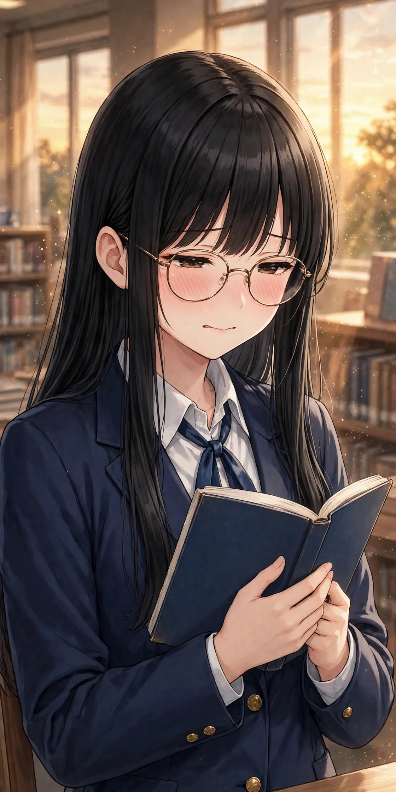
G-07「弁論大会」 登場：月島ゆき
時期：5月第3週・毎年 概要：弁論大会。体育館に全校生徒が集まり、クラス代表の弁論が始まった。
G-08「球技大会」 登場：星野あかり
時期：5月第4週・毎年 概要：球技大会。体育館はクラス対抗の熱気に包まれていた。

G-09「梅雨の図書室」 登場：月島ゆき
時期：6月第1週・毎年 概要：梅雨入りした放課後。激しい雨で下校できず、図書室に足止めされた。

G-10「水泳大会」 登場：星野あかり
時期：6月第2週・毎年 概要：水泳大会。プールサイドは声援で熱気に包まれていた。
G-11「期末前の勉強会」 登場：月島ゆき・桜井さくら
時期：6月第3週・毎年 概要：期末テストが近づき、放課後の図書室で勉強会が開かれた。
G-12「七夕」 登場：ランダム
時期：6月第4週・毎年 概要：七夕。校舎の笹に、みんなの短冊が揺れていた。
G-13「あかりの誕生日」 登場：ランダム
時期：7月第1週・毎年 概要：
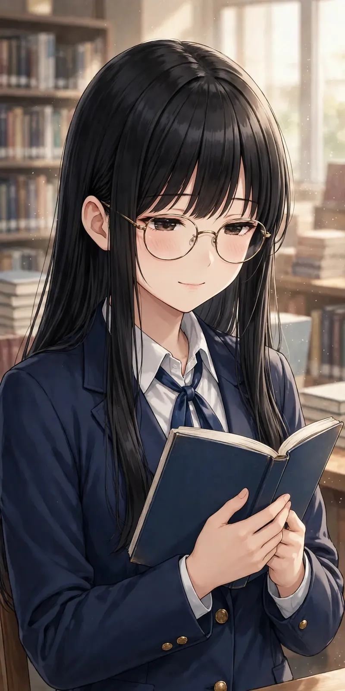
G-14「期末テスト」 登場：月島ゆき
時期：7月第2週・毎年 概要：期末テストの結果が返ってきた。
G-15「夏休みの計画」 登場：ランダム
時期：7月第3週・毎年 概要：夏休み直前。下校路で、夏の計画の話になった。
G-16「海の一日」 登場：ランダム
時期：7月第4週・毎年 概要：夏休み、クラスのみんなで海へ行った。
G-17「夏休みの夜の電話」 登場：ランダム
時期：8月第1週・毎年 概要：夏休みの夜。スマホが鳴った。
G-18「夏祭り」 登場：ランダム
時期：8月第2週・毎年 概要：夏祭りの夜。友達と屋台を回り、花火を見上げた。来年は誰かと来たいな、と思った。
G-19「プラネタリウム」 登場：ランダム
時期：8月第3週・毎年 概要：夏休み。市のプラネタリウムの特別投影に、
G-20「水族館の夜」 登場：ランダム
時期：8月第4週・毎年 概要：夏休みの夜。水族館の夜間開館に、思い切って
G-21「さくらの誕生日」 登場：ランダム
時期：9月第1週・毎年 概要：
G-22「看病」 登場：ランダム
時期：9月第2週・毎年 概要：…わざわざ来てくれたの？ごめんね、こんな姿…。でも、すごく嬉しい
G-23「線香花火の夜」 登場：ランダム
時期：9月第3週・毎年 概要：夏休みも終わりに近づいた夕方。河原で
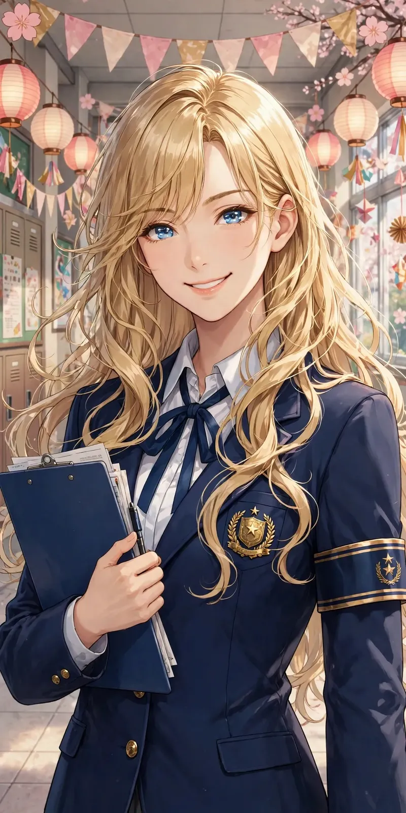
G-24「文化祭準備」 登場：藤原りん・星野あかり
時期：9月第4週・毎年 概要：文化祭まで、あと少し。放課後の教室は、段ボールと絵の具の匂いがした。

G-25「文化祭の買い出し」 登場：桜井さくら・藤原りん
時期：10月第1週・毎年 概要：文化祭直前。出し物の買い出しで、放課後の商店街が賑わっていた。
G-26「文化祭」 登場：藤原りん
時期：10月第2週・毎年 概要：文化祭当日。クラスの出し物は大盛況だった。午後は自由時間。誰と回るかで、放課後の空気が変わりそうだ。
G-27「文化祭の片付け」 登場：ランダム
時期：10月第3週・毎年 概要：文化祭の翌週。校舎の片付けと、小さな打ち上げの日。

G-28「ハロウィン」 登場：藤原りん
時期：10月第4週・毎年 概要：ハロウィン。生徒会主催の仮装パーティーが、夕方の校舎で始まった。
G-29「修学旅行の準備」 登場：藤原りん・星野あかり
時期：11月第1週・毎年 概要：修学旅行を前に、班決めとしおり作りの放課後。教室は旅行への期待でざわめいていた。
G-30「修学旅行」 登場：月島ゆき・星野あかり・藤原りん
時期：11月第2週・毎年 概要：修学旅行。班行動で古い街並みを歩いた。

G-31「秋の音楽室コンサート」 登場：藤原りん
時期：11月第3週・毎年 概要：秋の放課後。音楽室からピアノの音が漏れていた。扉を開けると、りんが一人で弾いていた。
G-32「紅葉の放課後」 登場：ランダム
時期：11月第4週・毎年 概要：秋の放課後。通学路の坂道が、紅葉で真っ赤に染まっていた。
G-33「ゆきの誕生日」 登場：ランダム
時期：12月第1週・毎年 概要：
G-34「スキー合宿」 登場：ランダム
時期：12月第2週・毎年 概要：冬のスキー合宿。雪山は一面の銀世界だった。
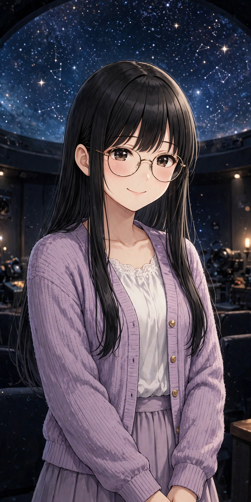
G-35「雪の日の図書室」 登場：月島ゆき
時期：12月第3週・毎年 概要：朝から雪が降り積もった日。学校は静まり返り、図書室は一年で一番静かだった。
G-36「マラソン大会」 登場：ランダム
時期：12月第4週・毎年 概要：冬のマラソン大会。冷たい風の中、白い息を吐きながら長いコースを走っていた。
G-37「初詣」 登場：ランダム
時期：1月第1週・毎年 概要：初詣。家族と神社へ行き、卒業までの無事を祈った。今年は勝負の年だ。
G-38「クリスマス」 登場：ランダム
時期：1月第2週・毎年 概要：クリスマスイブの放課後。イルミネーションが街を彩っていた。
G-39「冬のイルミネーション」 登場：ランダム
時期：1月第3週・毎年 概要：冬の夕方。駅前のイルミネーションが、今年も始まった。帰り道、
G-40「合格お守り」 登場：ランダム
時期：1月第4週・毎年 概要：受験まで、あとわずか。ピリッとした空気の図書室で、
G-41「りんの誕生日」 登場：ランダム
時期：2月第1週・毎年 概要：

G-42「チョコ作りの試食係」 登場：桜井さくら
時期：2月第2週・毎年 概要：放課後、家庭科室から甘い匂い。さくらが、バレンタインのチョコ作りを練習していた。
G-43「節分」 登場：藤原りん
時期：2月第3週・毎年 概要：節分。生徒会企画の豆まきイベントで、鬼役を引き受けることになった。
G-44「バレンタイン」 登場：ランダム
時期：2月第4週・毎年 概要：バレンタインデー。下駄箱には…義理チョコが一つ。来年こそは、と思ったが来年はもうないのだった。
G-45「卒業アルバムの寄せ書き」 登場：ランダム
時期：3月第1週・毎年 ※3年次のみ 概要：卒業アルバムの寄せ書きを集める日。教室は、少しだけセンチメンタルな空気だった。
G-46「ホワイトデー」 登場：ランダム
時期：3月第2週・毎年 概要：ホワイトデー。バレンタインのお返しに、少し奮発した贈り物を用意した。
G-47「卒業前日・屋上の誘い」 登場：ランダム
時期：3月第3週・毎年 ※3年次のみ 概要：卒業式を明日に控えた放課後。屋上への階段の前を通ると、扉が少しだけ開いていた。
【ヒロインの物語】全16章
ST-sakura-1「第1章 古い写真」 登場：桜井さくら
時期：好感度35以上 概要：放課後、さくらの教科書から、古い写真がはらりと落ちた。
ST-sakura-2「第2章 幼なじみの距離」 登場：桜井さくら
時期：好感度55以上 概要：最近、さくらの様子がおかしい。話しかけても、どこか上の空だ。
ST-sakura-3「第3章 屋上の約束」 登場：桜井さくら
時期：好感度75以上・2年次以降 概要：卒業が近づいたある日、さくらに呼び止められた。
ST-sakura-4「第4章 桜の約束」 登場：桜井さくら
時期：好感度85以上・3年次以降 概要：卒業式まで、あと少し。さくらが、桜の木の下で待っていた。

ST-akari-1「第1章 隠した痛み」 登場：星野あかり
時期：好感度35以上 概要：放課後のコート。あかりの動きが、いつもと違う。左足を、かばっている。
ST-akari-2「第2章 朝練の相方」 登場：星野あかり
時期：好感度55以上 概要：リハビリ期間の朝練。走れないあかりの代わりに、球拾いと軽いラリーに付き合う日々が始まった。
ST-akari-3「第3章 約束の決勝」 登場：星野あかり
時期：好感度75以上・2年次以降 概要：復帰戦の決勝。あかりはコートで躍動し、最後のポイントを決めた。
ST-akari-4「第4章 コートの隣」 登場：星野あかり
時期：好感度85以上・3年次以降 概要：最後の大会が終わった夕方。あかりが、使い込んだラケットをそっと差し出した。
ST-yuki-1「第1章 落ちた原稿」 登場：月島ゆき
時期：好感度35以上 概要：図書室で、ゆきが慌てて原稿用紙を拾い集めていた。一枚が、足元に滑ってきた。
ST-yuki-2「第2章 新人賞への応募」 登場：月島ゆき
時期：好感度55以上 概要：ゆきが、文学新人賞への応募を決意した。締め切り前夜、図書室で最後の推敲に付き合う。
ST-yuki-3「第3章 最初の読者へ」 登場：月島ゆき
時期：好感度75以上・2年次以降 概要：結果発表の日。ゆきの小説は、佳作に入選した。
ST-yuki-4「第4章 最後のページ」 登場：月島ゆき
時期：好感度85以上・3年次以降 概要：卒業式の前日。ゆきから、新しい原稿を渡された。タイトルは『屋上の神話』。
ST-rin-1「第1章 生徒会室の居眠り」 登場：藤原りん
時期：好感度35以上 概要：放課後の生徒会室。りんが、資料の山にもたれて眠っていた。
ST-rin-2「第2章 猫カフェの秘密」 登場：藤原りん
時期：好感度55以上 概要：休日、駅前の猫カフェで、猫にデレデレのりんと目が合った。
ST-rin-3「第3章 屋上の鍵」 登場：藤原りん
時期：好感度75以上・2年次以降 概要：卒業を前に、りんが小さな鍵を見せてくれた。校舎屋上の鍵だ。
ST-rin-4「第4章 二つ目の鍵」 登場：藤原りん
時期：好感度85以上・3年次以降 概要：卒業式の前日。りんが、小さな包みを手渡してきた。中には、屋上の鍵と同じ形の、小さな鍵。
【ほっこり】全32件（通常週ランダム）
H-01「子猫と傘」 登場：桜井さくら
概要：雨上がりの帰り道、段ボールの中で鳴く子猫を見つけた。
H-02「おにぎりの味」 登場：桜井さくら
概要：お昼、財布を忘れて途方に暮れていると、{hero}がおにぎりを半分分けてくれた。
H-03「坂道の荷物」 登場：星野あかり
概要：駅前の急な坂で、重い荷物に困るおばあさんを見かけた。
H-04「相合傘」 登場：月島ゆき
概要：突然の夕立。傘を忘れた{hero}が軒下で困っていた。
H-05「風に飛んだプリント」 登場：藤原りん
概要：突風で生徒会のプリントが校庭に散らばった。
H-06「帰り道の星空」 登場：星野あかり
概要：部活帰り、停電で街の明かりが消えた夜。
H-07「手作りクッキー」 登場：月島ゆき
概要：放課後、{hero}が少し焦げた手作りクッキーを差し出した。
H-08「迷子の兄妹」 登場：藤原りん
概要：駅前で泣いている小さな兄妹を見つけた。
H-09「帰り道のアイス」 登場：星野あかり
概要：真夏の帰り道、駅前のコンビニでアイスを買った。
H-10「下駄箱の手紙」 登場：月島ゆき
概要：下駄箱に、小さな手紙が入っていた。差出人は{hero}。
H-11「放課後プリン」 登場：桜井さくら
概要：学食の期間限定プリン、最後の1個。
H-12「雪の日の手袋」 登場：月島ゆき
概要：初雪の日、駅までの道で手が悴んだ。
H-13「短冊の願い」 登場：藤原りん
概要：七夕の笹に短冊を結ぶ放課後。
H-14「温かい缶コーヒー」 登場：藤原りん
概要：寒い放課後、自販機の前で手を温めていると、{hero}が温かい缶コーヒーをもう一本買って、そっと渡してくれた。
H-15「押し花の栞」 登場：月島ゆき
概要：借りていた本を返すと、中から押し花の栞が落ちた。
H-16「帰り道の駄菓子屋」 登場：桜井さくら
概要：帰り道、小さな駄菓子屋に寄った。
H-17「図書室の窓の猫」 登場：月島ゆき
概要：図書室の窓の外に、いつも昼寝をしに来る三毛猫がいる。
H-18「忘れ物の傘」 登場：桜井さくら
概要：雨の月曜日、傘立てに先週から残ったままの傘があった。
H-19「点灯前のイルミネーション」 登場：藤原りん
概要：冬の放課後、駅前のイルミネーションの点灯準備を手伝うことになった。
H-20「線路沿いの夕日」 登場：星野あかり
概要：帰り道、線路沿いの土手で夕日が沈むのを見ていた。
H-21「本の栞の裏」 登場：月島ゆき
概要：返してもらった本の栞の裏に、小さな字で一文が書かれていた。
H-22「二人三脚の紐」 登場：星野あかり
概要：体育祭の練習で、{hero}と二人三脚の紐を結んだ。
H-23「帰り道の流れ星」 登場：月島ゆき
概要：少し遅くなった帰り道、{hero}と夜空を見上げていたら、流れ星が一つ、静かに流れた。
H-24「波打ち際の貝殻」 登場：星野あかり
概要：海辺で綺麗な貝殻を見つけた。
H-25「看病のおかゆ」 登場：桜井さくら
概要：風邪気味で早退した日、{hero}が家までプリントを届けてくれた。
H-26「リフトの二人」 登場：藤原りん
概要：スキー合宿のリフト。隣に座った{hero}と、眼下の銀世界を見下ろした。
H-27「海辺の栞」 登場：月島ゆき
概要：海辺の小さな店で、貝殻の栞を見つけた。
H-28「マフラーの片端」 登場：桜井さくら
概要：寒い帰り道、{hero}が長いマフラーの片端を、こちらの首にも巻いてくれた。
H-29「雪見ココア」 登場：藤原りん
概要：雪の放課後、駅前のカフェで温かいココアを飲んだ。
H-30「山の形の図書館」 登場：月島ゆき
概要：放課後、{hero}に連れられて黒羽図書館へ。
H-31「鮎の塩焼き」 登場：星野あかり
概要：那珂川の河原で、鮎の塩焼きをほおばった。
H-32「帰りの寄り道」 登場：桜井さくら
概要：帰り道、{hero}とダイユーに寄り道。
【地域イベント】全46件

L-01「松尾芭蕉の石碑」 登場：月島ゆき
時期：通年 概要：町なかを歩いていたら、松尾芭蕉の石碑の前で{hero}と出会った。
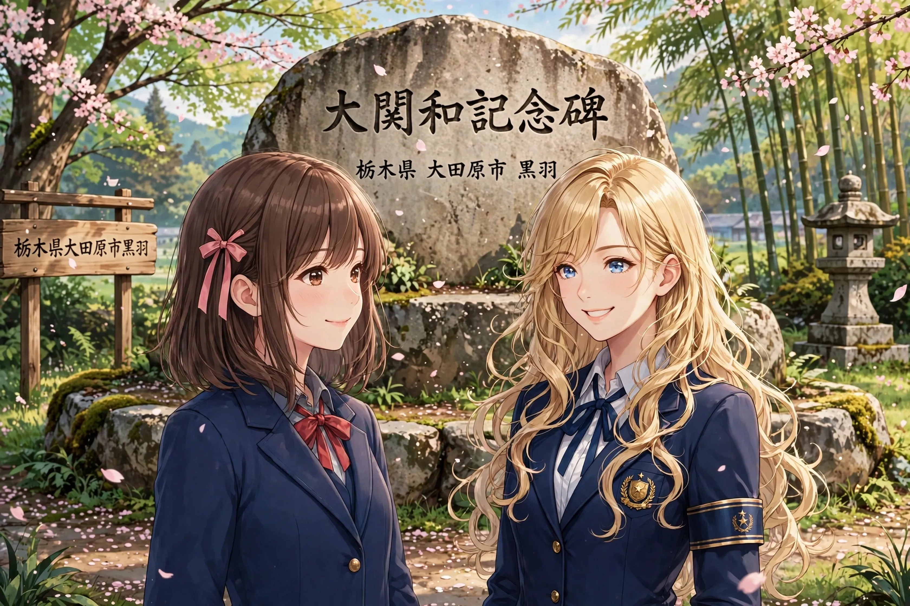
L-02「大関和の記念碑」 登場：藤原りん
時期：通年 概要：黒羽城址公園のそばで、大関和の記念碑の前に立つ{hero}と出会った。
L-03「雲巌寺の座禅体験」 登場：藤原りん
時期：通年 概要：週末、雲巌寺の座禅体験に{hero}と参加した。

L-04「雲巌寺の紅葉」 登場：月島ゆき
時期：10・11月 概要：秋の雲巌寺へ、{hero}と紅葉を見に行った。
L-05「大雄寺の静けさ」 登場：月島ゆき
時期：通年 概要：放課後、大雄寺の境内で{hero}とばったり。

L-06「那珂川のやな場」 登場：星野あかり
時期：7・8・9月 概要：那珂川のやな場に、{hero}と鮎を見に行った。

L-07「五峰の湯の足湯」 登場：桜井さくら
時期：通年 概要：黒羽温泉・五峰の湯の前を通りかかり、{hero}と足湯に浸かった。

L-08「道の駅・那須与一の郷」 登場：桜井さくら
時期：通年 概要：道の駅「那須与一の郷」に、{hero}と寄り道した。
L-09「梨畑の前で」 登場：星野あかり
時期：9・10月 概要：大田原の梨畑の前を、{hero}と歩いた。
L-10「大田原牛の看板」 登場：星野あかり
時期：通年 概要：大田原牛の店の前で、{hero}とショーケースに見入った。
L-11「とうがらし味噌」 登場：桜井さくら
時期：通年 概要：{hero}の家で、大田原とうがらしの味噌を味見させてもらった。
L-12「黒羽図書館の窓際席」 登場：月島ゆき
時期：通年 概要：黒羽図書館の窓際席で、{hero}と並んで本を読んだ。
L-13「城址公園のベンチ」 登場：藤原りん
時期：通年 概要：黒羽城址公園のベンチで、{hero}と休憩した。
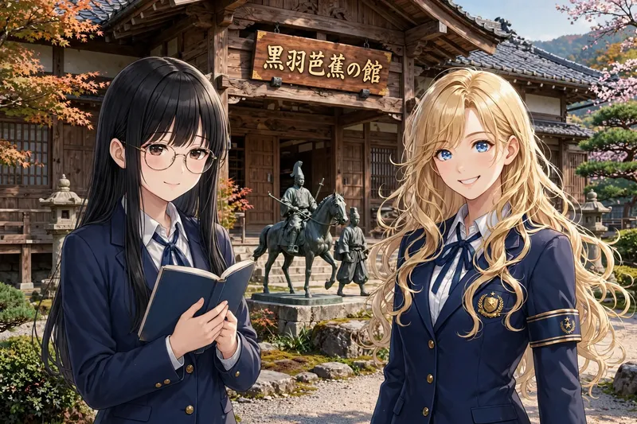
L-14「芭蕉の館の企画展」 登場：月島ゆき
時期：通年 概要：黒羽芭蕉の館の企画展に、{hero}と行ってきた。
L-15「ホテル花月の前で」 登場：星野あかり
時期：通年 概要：ホテル花月の前で、部活帰りの{hero}と会った。
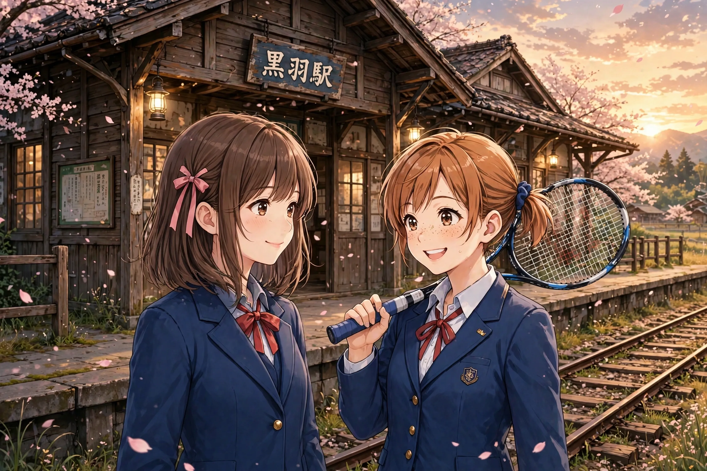
L-16「黒羽の商店街」 登場：桜井さくら
時期：通年 概要：黒羽の商店街を、{hero}とぶらぶら歩いた。
L-17「田んぼの風景」 登場：桜井さくら
時期：5・6月 概要：那須野が原の田んぼのあぜ道を、{hero}と歩いた。
L-18「黒羽の星空」 登場：月島ゆき
時期：通年 概要：少し遅くなった帰り道、{hero}と夜空を見上げた。
L-19「那須疏水の話」 登場：藤原りん
時期：通年 概要：帰り道、那須疏水の水路沿いを{hero}と歩いた。
L-20「城址公園のイルミネーション」 登場：藤原りん
時期：12・1月 概要：冬の黒羽城址公園。イルミネーションが城址を彩っていた。
L-21「蛙の声の帰り道」 登場：桜井さくら
時期：6・7月 概要：夕方の帰り道、田んぼから大合唱の蛙の声。

L-22「とうがらしジェラート対決」 登場：桜井さくら
時期：6・7・8月 概要：道の駅「那須与一の郷」で、名物のとうがらしジェラートに{hero}と挑戦した。
L-23「鮎の塩焼きと芭蕉定食」 登場：星野あかり
時期：7・8・9・10月 概要：黒羽観光やなで、鮎の塩焼きと芭蕉定食を{hero}と味わった。

L-24「鮎のつかみ取り」 登場：星野あかり
時期：7・8月 概要：やな場のつかみ取り体験で、{hero}と鮎を追いかけた。
L-25「芭蕉の館で俳句づくり」 登場：月島ゆき
時期：通年 概要：黒羽芭蕉の館で、{hero}と俳句づくりに挑戦した。
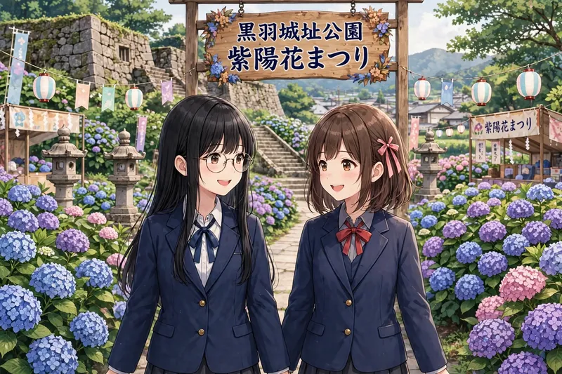
L-26「くろばね紫陽花まつり」 登場：桜井さくら
時期：6・7月 概要：黒羽城址公園の紫陽花まつりに、{hero}と出かけた。
L-27「紫陽花のライトアップ」 登場：藤原りん
時期：6月 概要：夜の黒羽城址公園。紫陽花まつりのライトアップに、{hero}と来た。
L-28「紫陽花スケッチ」 登場：月島ゆき
時期：6月 概要：城址公園で、{hero}と紫陽花のスケッチをした。
L-29「大雄寺の作法教室」 登場：藤原りん
時期：通年 概要：大雄寺の作法教室に、{hero}と参加した。
L-30「雲巌寺の赤い橋」 登場：桜井さくら
時期：10・11月 概要：雲巌寺の赤い橋で、{hero}と写真を撮り合った。

L-31「なかがわ水遊園」 登場：月島ゆき
時期：通年 概要：県立なかがわ水遊園の「おもしろ魚館」に、{hero}と行った。

L-32「与一まつりの屋台巡り」 登場：桜井さくら
時期：8月 概要：大田原の与一まつり。目抜き通りが歩行者天国になり、屋台がずらりと並んでいた。
L-33「黒羽太鼓の音」 登場：星野あかり
時期：8月 概要：与一まつりの会場で、黒羽太鼓の演奏に{hero}と見入った。

L-34「鮎釣り大会の応援」 登場：星野あかり
時期：8月 概要：那珂川レディース鮎釣り大会の応援に、{hero}と行った。
L-35「マラソンの給水ボランティア」 登場：星野あかり
時期：11月 概要：大田原マラソンの給水ボランティアに、{hero}と参加した。
L-36「大田原マラソンへの挑戦」 登場：星野あかり
時期：11月 概要：大田原マラソンの10kmの部に、{hero}と挑戦した。
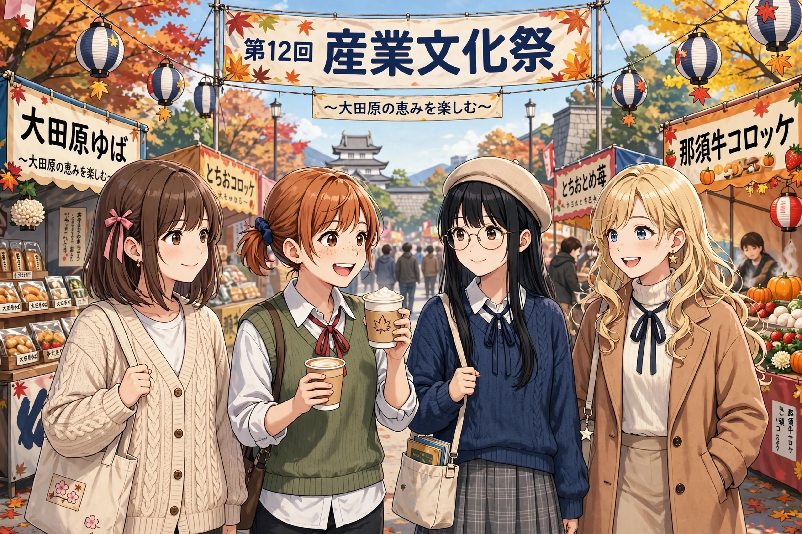
L-37「産業文化祭の模擬店」 登場：桜井さくら
時期：11月 概要：大田原市産業文化祭で、{hero}と模擬店を手伝った。
L-38「JAまつりの詰め放題」 登場：桜井さくら
時期：11月 概要：産業文化祭と同時開催のJAまつりで、野菜の詰め放題に{hero}と挑んだ。

L-39「黒羽茶の試飲会」 登場：藤原りん
時期：通年 概要：道の駅で、黒羽茶の試飲会に{hero}と参加した。
L-40「栃木三鷹の収穫手伝い」 登場：桜井さくら
時期：9・10月 概要：とうがらし畑で、栃木三鷹の収穫を{hero}と手伝った。
L-41「さんたからあげ食べ歩き」 登場：星野あかり
時期：通年 概要：商店街で、大田原ブランド「さんたからあげ」を{hero}と食べ歩いた。
L-42「商店街の歳末福引き」 登場：藤原りん
時期：12月 概要：年末の黒羽商店街で、歳末セールの福引きに{hero}と並んだ。

L-43「くらしの館の昔体験」 登場：月島ゆき
時期：通年 概要：くらしの館で、昔の暮らしの展示を{hero}と見て回った。
L-44「那須与一伝承館」 登場：月島ゆき
時期：通年 概要：道の駅の隣、那須与一伝承館に{hero}と寄った。
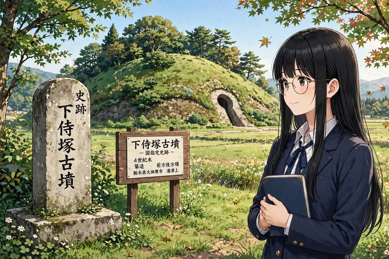
L-45「下侍塚古墳の丘」 登場：藤原りん
時期：通年 概要：少し足を延ばして、下侍塚古墳を{hero}と見に行った。

L-46「黒羽花市」 登場：桜井さくら
時期：4月 概要：春の黒羽花市に、{hero}と出かけた。
【レアキャラ】全6人
R-01「やなの大将」 同行：星野あかり
時期：7・8・9・10月 概要：那珂川のやな場で、鮎を焼く大将と話し込んだ。
R-02「ホームセンターの鉄人」 同行：桜井さくら
時期：通年 概要：ホームセンターで、ボディビルみたいなおっちゃんに声をかけられた。
R-03「バイト先のマダム」 同行：藤原りん
時期：通年 概要：バイト先のカフェに、真珠のネックレスのお金持ちのマダムが来店した。
R-04「ゆるキャラ与一丸」 同行：桜井さくら
時期：通年 概要：商店街で、大田原のゆるキャラ「与一丸」が立ち往生していた。
R-05「とうがらし畑のおばあちゃん」 同行：桜井さくら
時期：9・10・11月 概要：とうがらし畑の前で、農家のおばあちゃんに声をかけられた。
R-06「芭蕉の館の学芸員」 同行：月島ゆき
時期：通年 概要：黒羽芭蕉の館で、学芸員さんが閉館間際に声をかけてくれた。
【句碑めぐり】全10か所

K-01「常念寺句碑」 登場：月島ゆき
句：野を横に 馬牽むけよ ほととぎす 那須野の広い野と、ほととぎすの鋭い声を詠んだ句。夏の野の風情が伝わってくる。

K-02「修験光明寺跡句碑」 登場：月島ゆき
句：夏山に 足駄を拝む 首途（かどで）哉 光明寺の行者像の健脚にあやかって、これからの道中の無事を祈った句。

K-03「西教寺曽良句碑」 登場：月島ゆき
句：かさねとは 八重撫子の 名成るべし 黒羽入りの日、後を慕ってついてきた少女「かさね」の純情を詠んだ、弟子・曽良の句。

K-04「玉藻稲荷神社句碑」 登場：月島ゆき
句：秣（まぐさ）負う 人を枝折（しおり）の 夏野哉 秣を背負う農夫を道しるべにやって来た、という挨拶の句。草深い那須の情景。

K-05「明王寺句碑」 登場：月島ゆき
句：今日も又 朝日を拝む 石の上 余瀬で催された歌仙の中の句。石の上に立って朝日を拝む行者の姿を詠んだ。

K-06「芭蕉の道入口句碑」 登場：月島ゆき
句：行く春や 鳥啼き魚（うお）の 目は泪 『奥の細道』の旅立ちにあたって、離別・惜別の情を込めて詠んだ句。

K-07「浄法寺桃雪邸跡句碑」 登場：月島ゆき
句：山も庭も 動き入るるや 夏座敷 黒羽の山河と浄法寺家の庭園の美しさを、絵画的に表した句。

K-08「芭蕉の道の途中の句碑」 登場：月島ゆき
句：田や麦や 中にも夏の ほととぎす 浄法寺家に滞在していた四月七日に詠んだ句。夏のほととぎすだけが風情を感じさせる。

K-09「芭蕉の広場の句碑」 登場：月島ゆき
句：鶴鳴くや 其（その）声に芭蕉 やれぬべし 浄法寺邸で、鶴の絵をほめる「賛」として詠んだ句。芭蕉の葉まで破れてしまいそう、という洒落。
K-10「雲巌寺句碑」 登場：月島ゆき
句：木啄（きつつき）も 庵（いお）は破らず 夏木立 芭蕉が尊敬する仏頂和尚の山居跡を訪ねた時の句。和尚の徳の前に、きつつきさえ敬意を払っている。
【保健室の先生ルート】5段階
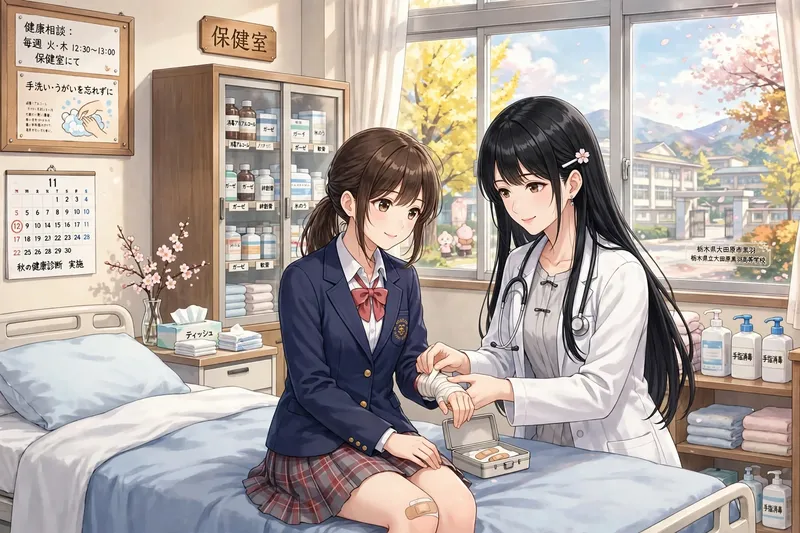
N-01「保健室で手当て・初対面」
条件：2週目以降、運動系コマンドで怪我（50%）

N-02「保健室を訪ねて」
条件：「休養する」で保健室訪問×2回

N-03「商店街の目撃」
条件：地域イベント時に、りんと金髪の女性を目撃×2回

N-04「街で単独遭遇」
条件：街で単独で会う×3回（季節で変化）

N-05「卒業・正体判明と告白」
条件：卒業時：最終段階＋先生の好感度30以上（最優先）
【エンディング】全13種

E-01「恋愛エンド（さくら）」
条件：好感度80・魅力55・信頼50・傷心70未満・嫉妬80未満
E-02「恋愛エンド（あかり）」
条件：好感度80・運動55・信頼50・傷心70未満・嫉妬80未満

E-03「恋愛エンド（ゆき）」
条件：好感度80・学力55・信頼50・傷心70未満・嫉妬80未満
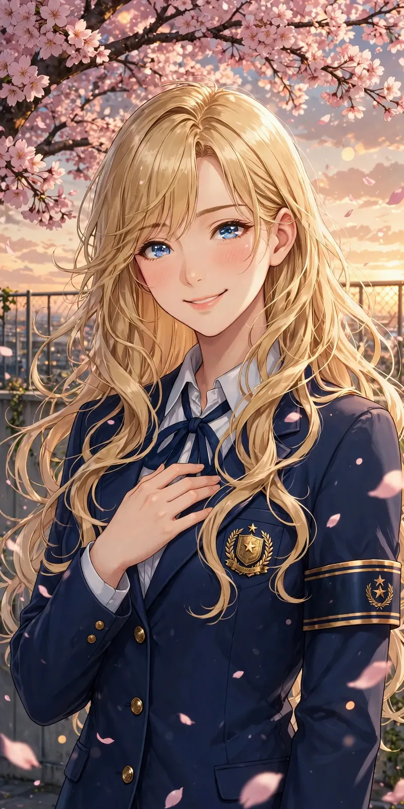
E-04「恋愛エンド（りん）」
条件：好感度80・芸術55・信頼50・傷心70未満・嫉妬80未満
E-05「先生エンド（隠し）」
条件：N-05の条件
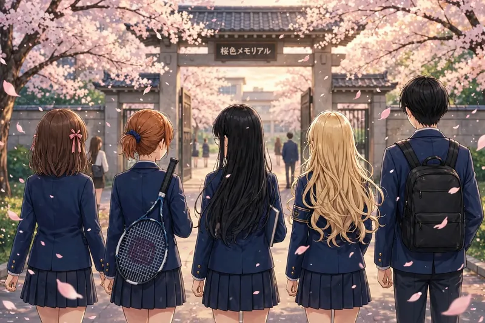
E-06「ライバルエンド」
条件：好感度70以上・信頼40未満・ライバル登場済み
E-07「もう少しエンド」
条件：好感度65以上
E-08「親友エンド」
条件：親密度55以上・社交45以上
E-09「人生型：仕事成功型」
条件：学力70以上
E-10「人生型：趣味没頭型」
条件：芸術70以上
E-11「人生型：友人関係充実型」
条件：社交70以上
E-12「人生型：独身自由人型」
条件：他に当てはまらない
E-13「人生型：何も成し遂げられなかった型」
条件：主要5パラメータ全て45未満
Snow Moon Games ／ 管理者向け資料